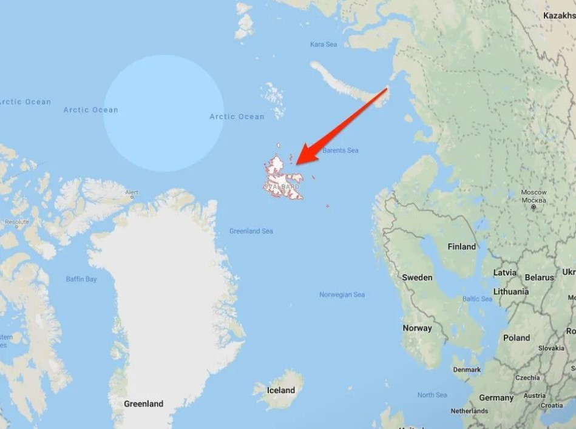
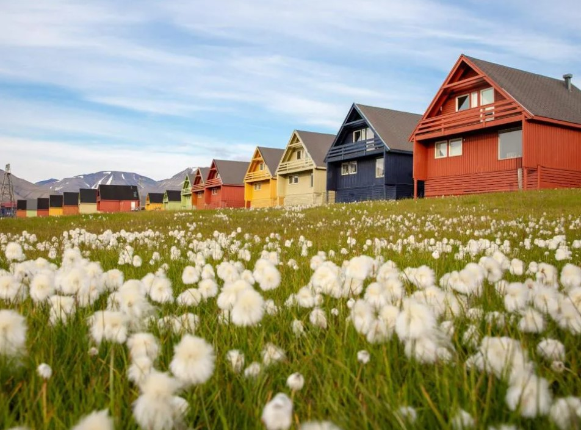
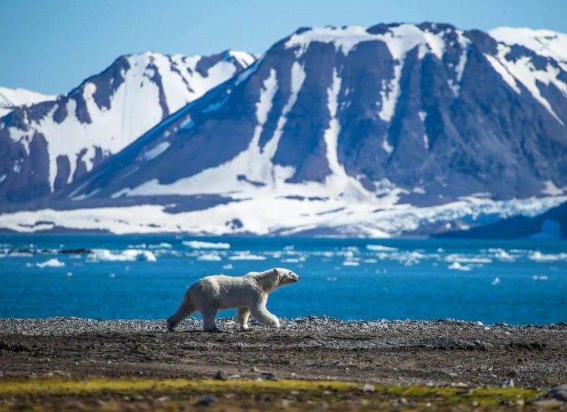
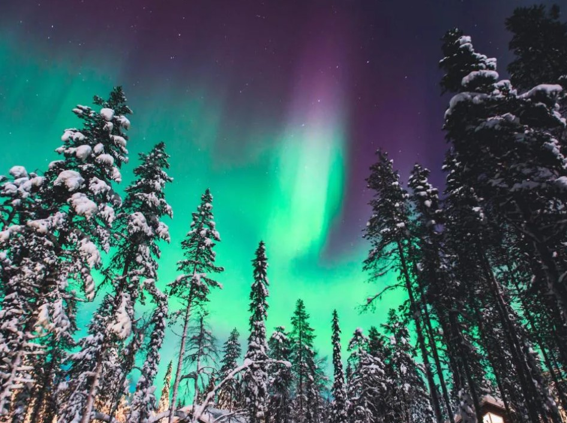
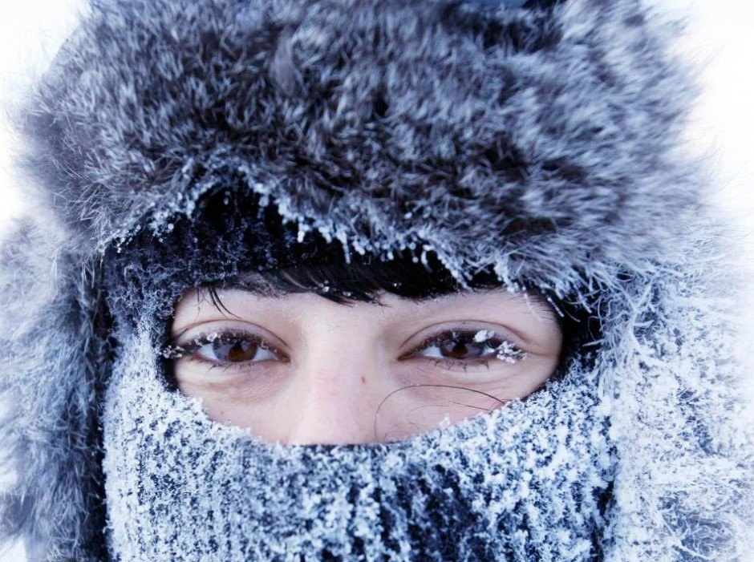
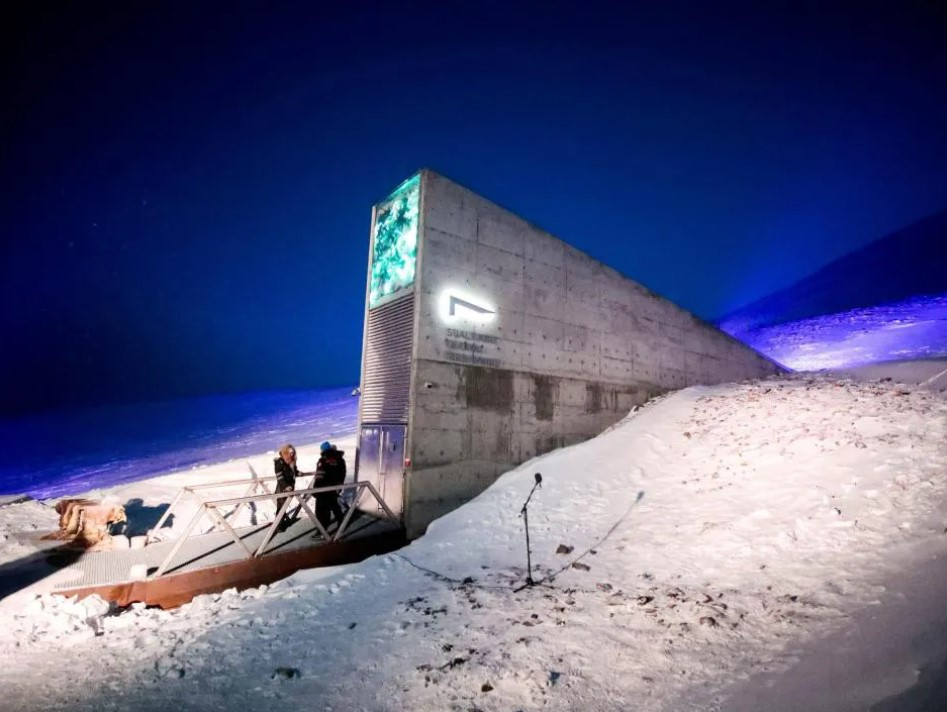

Así es la vida en las islas Svalbard de Noruega, la ciudad más al norte del mundo
Svalbard forma parte de Noruega, país que se clasifica constantemente entre los más felices del mundo. Sin embargo, es la única parte de Noruega donde puedes mudarte sin visa.

El archipiélago se encuentra a medio camino entre la parte continental de Noruega y el Polo Norte.

Tiene una población de aproximadamente 2.500 habitantes y su capital, Longyearbyen, es la ciudad más septentrional del mundo, según la BBC.

La población es tan pequeña que los osos polares superan en número a las personas: las islas albergan a unos 3.000 osos polares, según Visit Svalbard.

Está casi completamente oscuro durante 4 meses al año y completamente iluminado durante otros 4 meses.

Los entierros están prohibidos desde los años 50 debido al permafrost: descongelar el permafrost puede hacer que los cadáveres perfectamente conservados salgan a la superficie si no se entierran lo suficientemente profundo, según la BBC.Los muertos son enviados al continente. En otras palabras: no puedes nacer ni ser enterrado en Svalbard.Los muertos son enviados al continente. En otras palabras: no puedes nacer ni ser enterrado en Svalbard.

Escondido a unos 120 metros dentro de una montaña, almacena todos los cultivos conocidos del planeta en caso de un desastre natural o provocado por el hombre.
